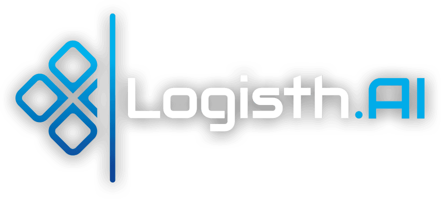
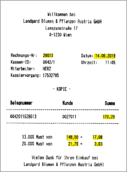
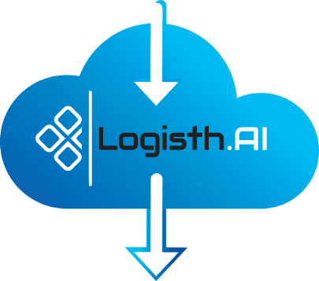
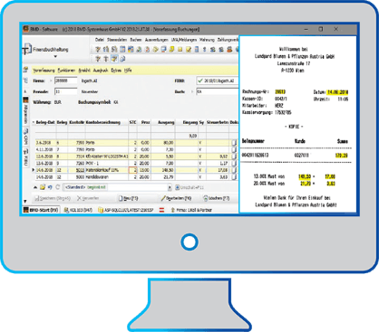

[ləˈdʒɪsˈtaːj]
Von der Buchführung in der Antike ins digitale Zeitalter
Von der Buchführung in der Antike ins digitale Zeitalter
AUTOMATISCHES EINLESEN
von BELEGEN mit
KONTIERUNGSVORSCHLAG
Belege (Eingangs-, Ausgangsrechnungen, Kassabelege) sind Dokumente mit einer Vielzahl von Informationen. Lediglich ein Teil davon ist für die Buchhaltung relevant.
Die manuelle Erfassung der benötigten Daten ist zeit- und kostenintensiv,
Fehler lassen sich nicht vermeiden.
Die manuelle Erfassung der benötigten Daten ist zeit- und kostenintensiv,
Fehler lassen sich nicht vermeiden.
Logisth.AI automatisiert das Auslesen der relevanten Daten
REDUKTION DER ARBEITSLAST
Durch eine signifikant hohe Trefferrate (ca. 90% vollständig erkannter Belege).
SCHNELLE DURCHLAUFZEITEN
Durch die automatische Überleitung sind die Ergebnisse unmittelbar im Buchungsprogramm abrufbar.
EINFACHE
ÜBERPRÜFUNG
Farbliche Markierung auf den Belegen für die buchungsrelevanten Daten (Datum, Rechnungsnummer, Kunde, Umsatzsteuersätze mit Beträgen).
KONTIERUNGS-
VORSCHLAG
Auf Basis der verbuchten Belege erfolgt automatisiert ein logischer Kontierungsvorschlag (sowohl für Eingangs- Ausgangs- als auch bei Barbelegen) inkl. Steuercodes und Steuersätze.
READY
TO USE
Keine Installation. Keine Einschulung der Mitarbeiter. Belegprüfung und Rechnungskontrolle erfolgt im Buchhaltungsprogramm. Kein Einlernen. (nicht formularbasiert).
QUALITÄTS-
STEIGERUNG
Keine manuellen Erfassungsfehler. Validierung von UID Nummern. Rechnungstrennung.
Leerseitenerkennung mit Vollständigkeitskontrolle.
Leerseitenerkennung mit Vollständigkeitskontrolle.
SOFTWARE-LÖSUNG
Die in Österreich neu entwickelte, eigenständige und herstellerunabhängige Software ist ein Instrument, das die Belegverarbeitung im Arbeitsablauf automatisiert und beschleunigt. Der Aktionsradius der Software umfasst den Zyklus „Einlesen“ der Belege (scan) bis hin zum „Vorerfassen“ der Buchungen inkl. vollständigem Kontierungsvorschlag.
Die Software Logisth.AI ist eine Cloud-Lösung auf EU-Servern (DSGVO) und garantiert höchste Sicherheits-Standards. Übermittelte Daten werden nicht permanent gespeichert, sondern nach Bearbeitung gelöscht.
Die Software Logisth.AI ist eine Cloud-Lösung auf EU-Servern (DSGVO) und garantiert höchste Sicherheits-Standards. Übermittelte Daten werden nicht permanent gespeichert, sondern nach Bearbeitung gelöscht.
SCANNER
SHARE
DROPBOX


- Logisth.AI übernimmt die gescannten Rechnungen.
- Eingabe von Stammdaten wie Buchungsdatum, Klient, Buchungssymbol, Gegenkonto.
- Rechnungstrennung und Entfernung von Leerseiten.
- Automatische Überleitung in die Buchhaltung ohne manuellen Eingriff
- Anzeige der jeweiligen Rechnung mit markierten Feldern
- Korrektur und Kontrolle
- Jede Buchung ist mit dem Belegabbild archiviert

- Kein neues Programm/keine Einschulung bei den Buchhaltungsmitarbeitern notwendig
- Hoher Kontierungsgrad durch künstliche Intelligenz
- Logisth.AI lernt automatisch im Hintergrund
SW-DEVELOPMENT
Die SW-Lösung Logisth.AI wurde von SW-Engineers in Zusammenarbeit mit Branchen-Experten (Steuerberater, Buchhaltungspersonal)entwickelt – daher hohe Kundenorientierung und kein „Konzerndenken“!
AUSLESERATE
Die Logisth.AI -Trefferquote mit mehr als 90% bezieht sich auf „vollständig erkannte Belege“ und nicht nur auf „erkannte Felder“.
TECHNISCHE DATEN
Scanrate:
bis zu 500 Belege pro Stunde
Dokumenttypen:
TIFF oder PDF
Erkennsystem:
AI/QR/Barcode
Schnittstellen:
BMD, DVO, RZL, Igel,
Navision, SAP, DATEV,...
Navision, SAP, DATEV,...
Installationstyp:
Cloud
KONTAKT:
Xion IT Systems GmbH
Anschrift:
Dresdnerstraße 81-85, 1200 Wien
Telefon:
+43 1 333 91 99 - 0
Fax:
+43 1 333 91 99 - 199
Email: